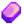
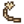
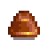
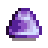

Bateas
La Batea es una herramienta utilizada para recolectar mineral (y otros objetos) de los cuerpos de agua. Willy te dará una Batea de Cobre después de quitar el Peñasco Brillante que hay en el puente al oeste de la entrada de la mina, revelando un arroyo en su lugar. Esto se logra completando los Lotes de la Pecera o comprando el "Bateo mineral" en el Formulario de proyectos de desarrollo comunitario de Joja por  20 000o.
20 000o.
Existen 4 "bateas" totales en el juego, la primera siendo la de cobre, obtenida despues de completar la pecera en el Centro Civico o hacer la mejora del peñasco en Joja, la siguientes variantes se pueden conseguir mejorando la batea de cobre en la herreria, las cuales aumentan el rango y los lugares donde puedes batear, tambien los objetos que puedes obtener.
Hay 4 encantamientos en total para las bateas, "pescador", que te permite pescar peces, "Arqueologo", doble probabilidad de encontrar artefactos, "Generoso", el cual da 50% mas probabilidad de obtener doble objetos y "Expansivo", aumenta el alcance de la batea mineral.
Adquisición
Ve a la montaña cualquier día después de que se retire el Peñasco Brillante. Se desencadenará una escena en la que Willy se pregunta por la desaparición de la roca. Él señala las luces brillantes en el agua que indican que la corriente está llevando menas fuera de las montañas. A continuación, le dará al jugador su Batea de cobre de repuesto de su mochila.
A partir de entonces, las bateas de cobre podrán adquirirse en la Tienda de pesca por  2500o.
2500o.
Usos
Observa las luces brillantes que aparecen aleatoriamente en el agua, acompañadas del sonido de algo "cayendo" en el agua. Si puedes llegar a la zona, acércate, equipa la Batea y haz clic con el botón izquierdo en las luces brillantes. El uso de la Batea no consume energía. La(s) ubicación(es) de las luces brillantes y el(los) objeto(s) recibido(s) por la batea se predeterminan al comienzo del día en una región. Las luces brillantes pueden aparecer en cualquier lago, estanque o río, en La playa durante el Mercado nocturno, y en el Sur de la isla jengibre.
También se puede colocar en la cabeza del jugador como un sombrero al moverlo desde el inventario a la ranura de equipamiento para la cabeza del jugador.
Estadísticas
| Imagen | Nombre | Costo | Ingredientes | Mejoras |
|---|---|---|---|---|
| Batea de Cobre | N/A | Puedes encontrar de 3 a 9 menas, de 3 a 9 de carbón/omnigeodas y una gema/mineral con el bateo. | ||
| Batea de Hierro | Puedes encontrar de 4 a 10 de mineral, de 4 a 10 de carbón/omnigeodas y dos gemas/minerales. Hay una pequeña posibilidad de que aparezca otro punto de bateo. | |||
| Batea de Oro | Puedes encontrar de 5 a 11 de mineral, de 5 a 11 de carbón/omnigeodas y tres gemas/minerales. Probabilidad ligeramente mayor de que aparezca otro punto de bateo. | |||
| Batea de Iridio |  Lingote de iridio (5) | Puedes encontrar de 6 a 12 de mineral, de 6 a 12 de carbón/omnigeodas y cuatro gemas/minerales. Tiene una alta probabilidad de generar otro punto de bateo. |
Objetos Obtenidos
Siempre se recibe una cantidad aleatoria de un tipo de mineral metálico por el bateo. También se puede recibir una cantidad aleatoria de carbón, una gema/mineral o una cantidad aleatoria de Omnigeodas. Se puede obtener un objeto adicional, el Anillo de la suerte, dependiendo de la Suerte diaria y de los Bonificadores de suerte. A continuación se muestra una lista completa de los objetos que se pueden obtener mediante el bateo, así como la forma en que se ajusta el porcentaje de probabilidad de obtenerlos según los distintos niveles de suerte.[1]
Como se muestra, una mejor suerte aumenta la posibilidad de encontrar Mena de iridio en lugar de Mena de cobre, y la posibilidad de encontrar un Diamante en lugar de Carbón. La suerte del Bonificador de comida también aumenta la posibilidad de encontrar un Diamante en lugar de una Amatista, Aguamarina, Esmeralda, Rubí, o un Topacio. La suerte de los potenciadores de comida afecta al porcentaje de probabilidad de encontrar una mena en un 0.4% por cada diferencia entera en la suerte, y en un 4% por cada número entero diferencia de suerte para todos los demás objetos.
En la Isla Jengibre, se pueden recibir dos objetos adicionales: La Cola fosilizada (Solamente en el río del lugar de excavación) o los Frutos de taros (en cualquier otro lugar). Las luces brillantes aparecerán al menos cada media hora en el río del lugar de excavación.
|
Menas
|
Gemas
|
Otros
|
Extra
 Cola fosilizada (20%) (en el río del lugar de excavación)
 Fruto de taro (20%) (Isla Jengibre Oeste, Sur, y Sureste)
Fruto de taro (20%) (Isla Jengibre Oeste, Sur, y Sureste)
 Anillo de la suerte (en cualquier lugar, depende completamente de la Suerte diaria y de los Bonificadores de suerte)
Anillo de la suerte (en cualquier lugar, depende completamente de la Suerte diaria y de los Bonificadores de suerte)
Sombreros
Las Bateas también se puede colocar en la cabeza del jugador como un sombrero al moverlo desde el inventario a la ranura de equipamiento para la cabeza del jugador.
| Imagen | Nombre | Descripción |
|---|---|---|
|  | Cacerola de cobre | Te pones la cacerola de cobre en la cabeza... |
| Cacerola de Acero | Te pones la cacerola de acero en la cabeza... | |
| Cacerola de Oro | Te pones la cacerola de oro en la cabeza... | |
|  | Cacerola de Iridio | Te pones la cacerola de iridio en la cabeza... |
Notas
- La profesión de Rastreador puede facilitar el bateo añadiendo una pequeña flecha verde cuando aparecen luces brillantes fuera de la pantalla (pero solo dentro de la región actual del mapa).
Referencias
- ↑ Consulte Pan::getPanItems en el código del juego.
Historial
- 1.0: Introducido.
- 1.4: Ahora se puede tirar a la papelera. Se puede comprar a Willy en la Tienda de pesca después de recibir la primera. Ahora se puede usar como sombrero.
- 1.5: Puede encontrar Cola fosilizada y Frutos de taros en la Isla Jengibre. Ahora se puede encontrar el Anillo de la suerte con el bateo.
- 1.6: Ahora se pueden actualizar a las versiones de hierro, oro e iridio en la Herrería.
| Herramientas | |
|---|---|
| Básicas | Azadas • Cubos de basura • Guadaña • Guadaña dorada • Hachas • Picos • Regaderas |
| Pesca | Caña de bambú • Caña de entrenamiento • Caña de fibra de vidrio • Caña de iridio • Barra de Iridio Avanzada • Trampa para cangrejos |
| Otros | Auto-Caricias • Batea de cobre • Cubeta lechera • Incubadora • Radiador • Recolector automático • Tijeras de esquilar • Tolva de heno |